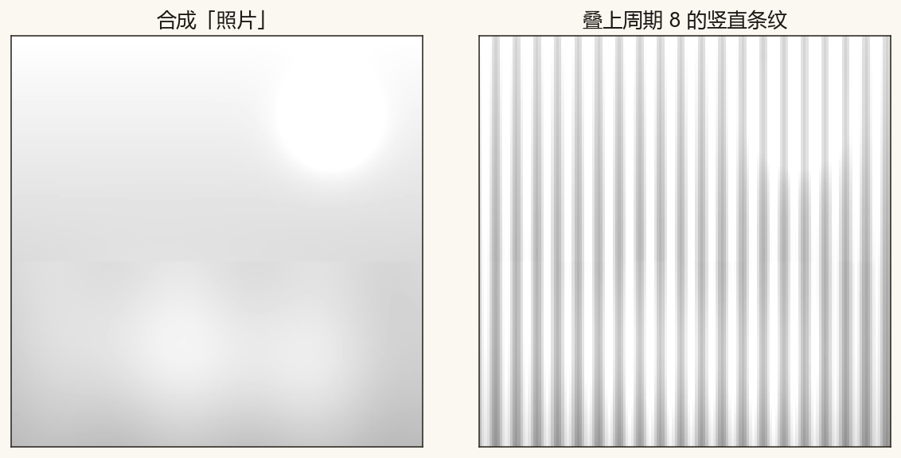
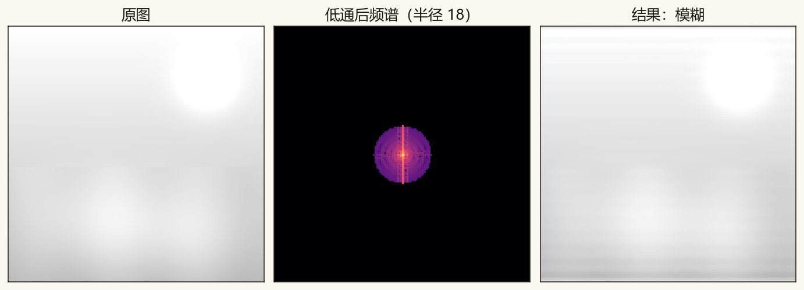
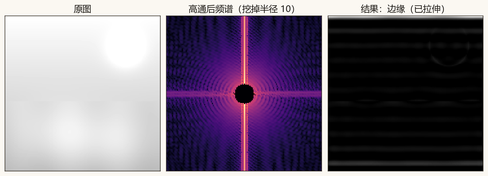
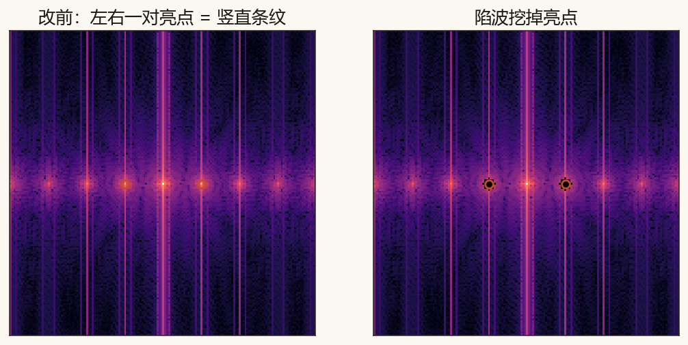
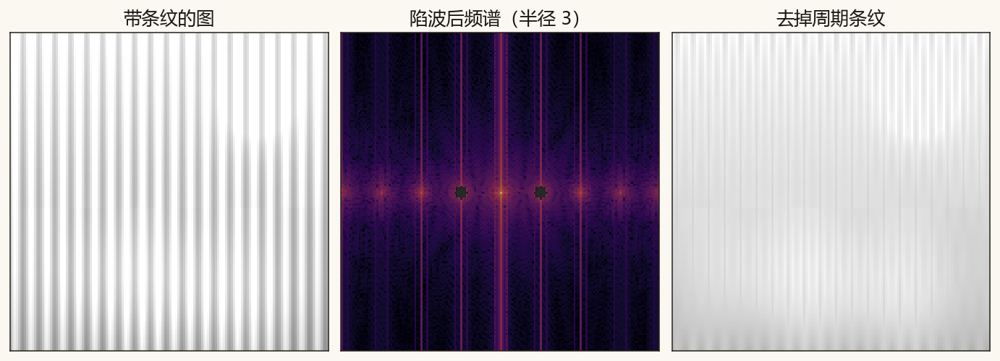
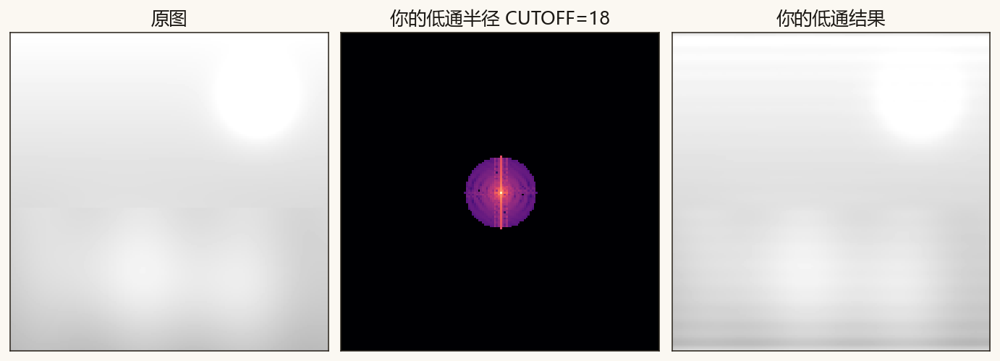
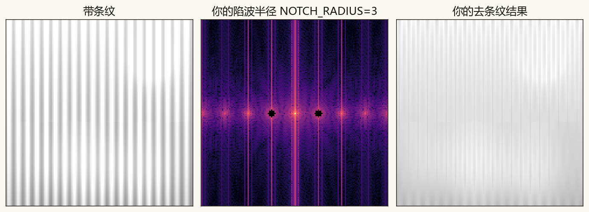

第 11 篇 · 图像滤波 · 约 45 分钟
第 10 篇看见了二维频谱。这一篇动手改频谱：留下中心低频，照片变糊；抠掉中心，只剩边缘；挖掉条纹对应的那对亮点，周期干扰会淡下去。
做法和声音均衡一样，只是格子从一排变成一张表：
新图 = IFFT2( FFT2(图) × 掩膜 )
中心附近是缓慢变化（天空、脸颊）；靠边是细密变化（头发丝、噪点、细条纹）。留下谁、挖掉谁，观感就不同。
为了不依赖外部文件，脚本画了一张 160×160 的灰阶风景，再叠一层周期为 8 像素的竖直条纹，模仿扫描干扰。

低通只留下频谱中心一个圆盘，半径叫截止半径。圆外置零。细节（高频）没了，画面变糊——和拍照时对焦没对准有点像，但这里是故意扔掉高频。

半径越小越糊；半径大到接近图像半宽，就几乎等于没滤。
高通反过来：挖掉中心，只留四周。缓慢的底子没了，跳变（边缘）留下来。结果整体偏暗、对比弱，脚本里做了拉伸，好让边缘看得见。

竖直条纹是一种很单纯的周期花样。它在频谱上不是糊成一片，而是在水平频率轴上左右各冒一个亮点（外加中心的直流）。周期 8、图宽 160 时，亮点大约离中心 160/8 = 20 格。

只在这对峰周围挖一个小圆洞，其它频率原样留下——这叫陷波。风景大体还在，竖线淡下去。

若条纹是斜的，峰就不在水平轴上，而在对应方向上。思路一样：在频谱上找到峰，挖掉它。
下面用一张简化的小图做示意：拖动半径，看低通圆盘变大变小。真正的风景图请跑脚本。
核心几行（二维 FFT、乘掩膜、逆变换）：
shifted = np.fft.fftshift(np.fft.fft2(image))
filtered = np.fft.ifft2(np.fft.ifftshift(shifted * mask)).real完整脚本在 code/ch11_image_filter.py。课文图不读文件顶部的练习参数。
python code/ch11_image_filter.py终端应出现「自检通过」，并保存 ch11_photo_stripes.png、ch11_lowpass.png、ch11_highpass.png、ch11_notch.png、ch11_spectrum_peaks.png。你的练习图是 ch11_my_lowpass.png 和 ch11_my_notch.png。
若终端中文是乱码，先执行 chcp 65001。图照样会保存。
code/ch11_image_filter.py，把 CUTOFF = 18 改成 8，运行。打开 ch11_my_lowpass.png：应比课文更糊。CUTOFF 改成 35，再运行：几乎看不出模糊。NOTCH_RADIUS 改成 1：洞太小，条纹可能去不干净。改成 6：条纹更淡，但洞太大时风景细节也会伤一点。CUTOFF = 18、NOTCH_RADIUS = 3。
CUTOFF = 18 时的低通练习图。
NOTCH_RADIUS = 3 时的去条纹练习图。留下中心附近的低频圆盘。细节变少，画面变模糊。
边缘和细变化。平坦区域被掏空，轮廓留下来。
在水平频率轴上左右各有一个亮点（外加中心直流）。陷波在亮点周围挖小洞，削弱这种周期干扰，同时尽量保留其它内容。
照片是一张表。视频是按时间排好的很多张表。下一篇盯住某一个像素，看它随时间闪烁——那又变回第 3 篇熟悉的一维频谱。